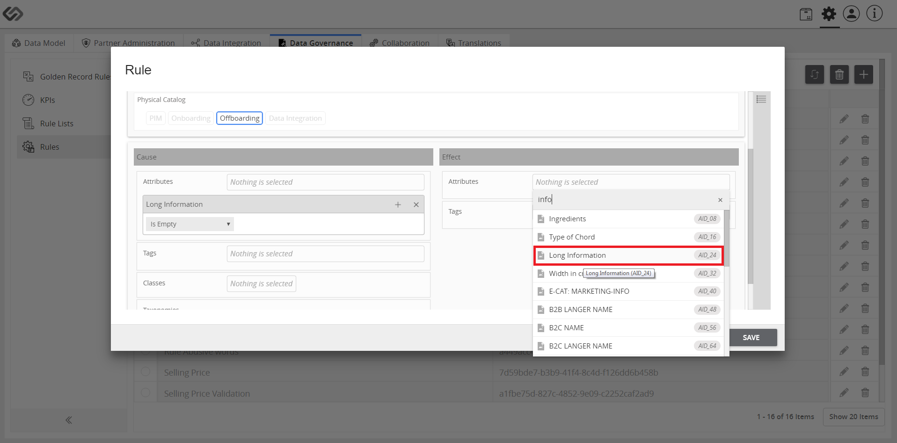
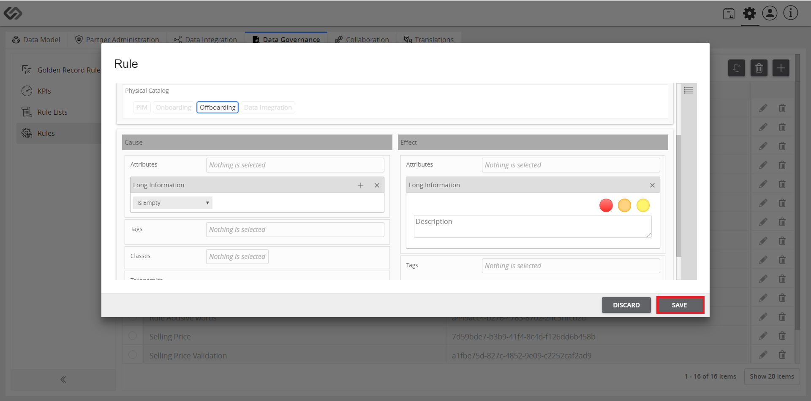
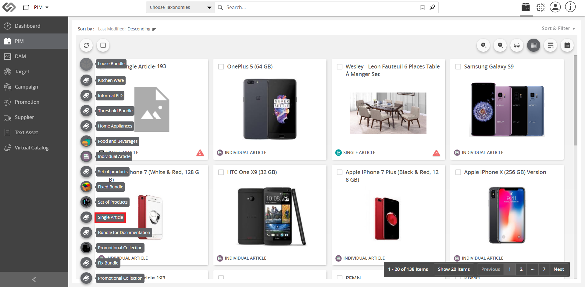
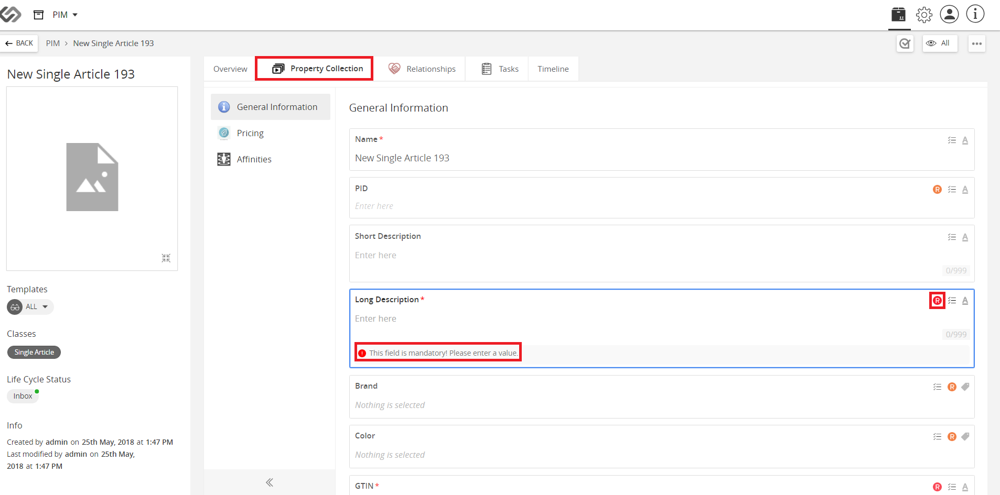

Data Quality Rule¶
The Data Quality Rule feature provides the functionality to create and set rules in the system to ensure the quality of data.
| Key Term: |
|
| Description: |
|
| Related topics: | |
| Application: |
|
How-to: Data Quality Rule¶
To do this data governance feature, follow these steps:
- Go to Administration.
- Go to the Rule Configuration section.
- Click on the “+” icon to create a new rule.
- Provide a name for the rule and click on the Attributes and Classes where the data quality rule will be applied.
Refer to the steps below for a data quality rule example applied to an attribute:
- Select the attribute (in Cause) and then, add the warning (in Effect). Save all the changes.
- In the Classes section, select the rule that will be applied.
- Go to PIM.
- Hover over the “+” icon and select the class.
Note: As indicated in the rule, the field cannot be empty. In runtime, if it’s blank, it will be highlighted for its rule violation. When you click on the warning message, the applied rule notification will appear.
